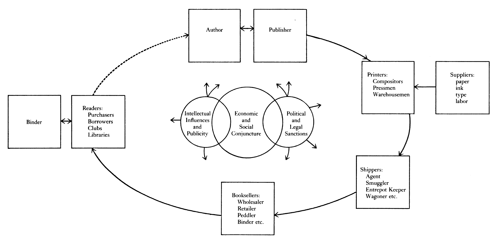

class: middle # 1. What is History of the Book? # 2. Origins of the Book: Papyrus <hr> Matthew J. Lavin Clinical Assistant Professor of English and Director of Digital Media Lab University of Pittsburgh January 2018 --- class: middle ### "The history of the book is a way of thinking about how people have given material form to knowledge and stories" (Howsam 1) --- class: middle ### "Despite its undisputed materiality, 'the book' is a more flexible and abstract conceptual category than many people imagine, and it is this very quality that makes it interesting" (Howsam 2) --- class: middle ### "Most dictionary definitions of the book are ... unabashedly Eurocentric and modern" (Howsam 2) --- class: middle # Four ways of thinking about the book (howsam 4-6) - ### As a text: literary criticism - ### As a material object: descriptive bibliography - ### As a cultural transaction: economics, history, macroanalysis (Annales school) - ### As an experience: readership studies, book collecting, sociology of the book --- class: middle # Chronology - ### Most "conventional and straightforward" way to look at book history (6) - ### Can be "compelling and coherent" but are always simplifications (7) --- class: middle # A Circuit of Composition, Mediation, and Production <hr>  <hr> Robert Darnton's Communications Circuit Diagram --- class: middle # Who Does Book History? --- class: middle # How are Books Categorized? --- class: middle # National vs. Transnational Approaches - ### "Books cross borders" --D.F. McKenzie - ### "Because books cross borders, book history must do so as well" --Michael Suarez --- class: middle # Papyrus - ### Dates to 2900, BC - ### Manufactured in Egypt, shipped all over - ### Made "from the plant from which takes its name" (Roemer 85) - ### Recto and verso sides of the reed, writing usually on the recto (87) --- class: middle # Papryus <iframe class="youtube" src="https://www.youtube.com/embed/DCR8n7qS43w" frameborder="0" allowfullscreen></iframe> --- class: middle # Papyrus - ### Unit of sale was the roll, not the sheet (86) - ### Used ink made of "carbon, gum arabic, and water" (87) --- class: middle # Books? - ### How else could have Homer's epics survived? (87) - ### "some sort of books must have existed already" (87) --- class: middle # Scribal Practices - ### Scribes in Egypt vs. scribes in Greece - ### Small percentage of people could read and write (89) --- class: middle ### "In representations from the Greek and Roman worlds, we frequently see people reading, but we never see them writing. The act of reading was worthy of the artist's brush, whereas the act of copying was not" (88) --- class: middle # Alexandria and Pergemum (89-90) - ### How does Roemer describes these as different kinds of libraries? --- class: middle # Codex-type books (93) - ### What is the codex? - ### How does Howsam explain the complex relationship between the codex and the book? (See Howsam 3) --- class: middle # The Scribal Autograph - ### What does this signify? (94)